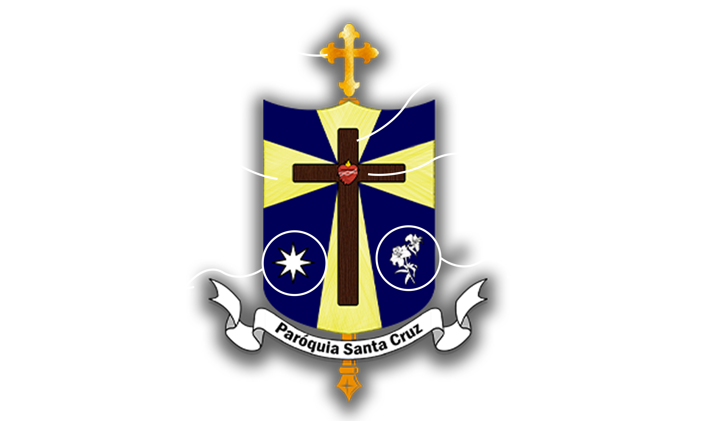

Detalhes sobre o Brasão da Santa Cruz
Categoria: Design de Identidade
Criação: 25/09/2021
Cliente: Paróquia Santa Cruz | Diocese de Santo Amaro
O Brasão da Paróquia Santa Cruz foi desenhado com o objetivo de construir uma identidade visual sólida e institucional. Cada elemento gráfico foi pensado para sintetizar os valores e a história da comunidade, resultando em uma composição equilibrada. Desenvolvido em meus primeiros passos no design, o projeto destaca minha busca inicial por criar marcas com propósito e legibilidade.
Significados dos ícones
